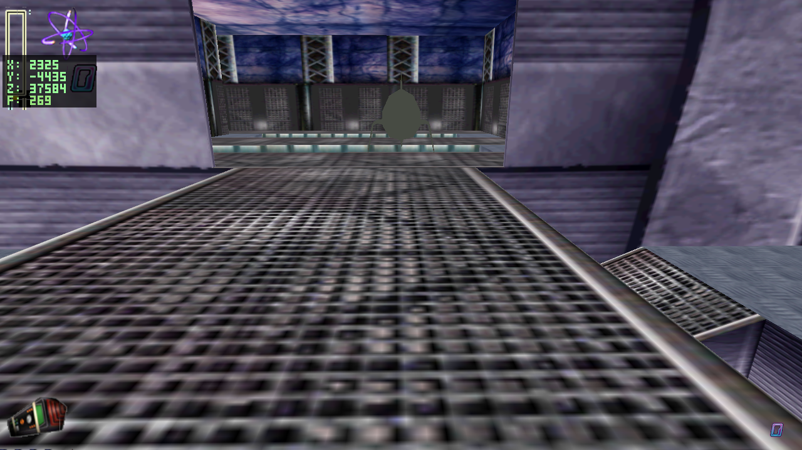
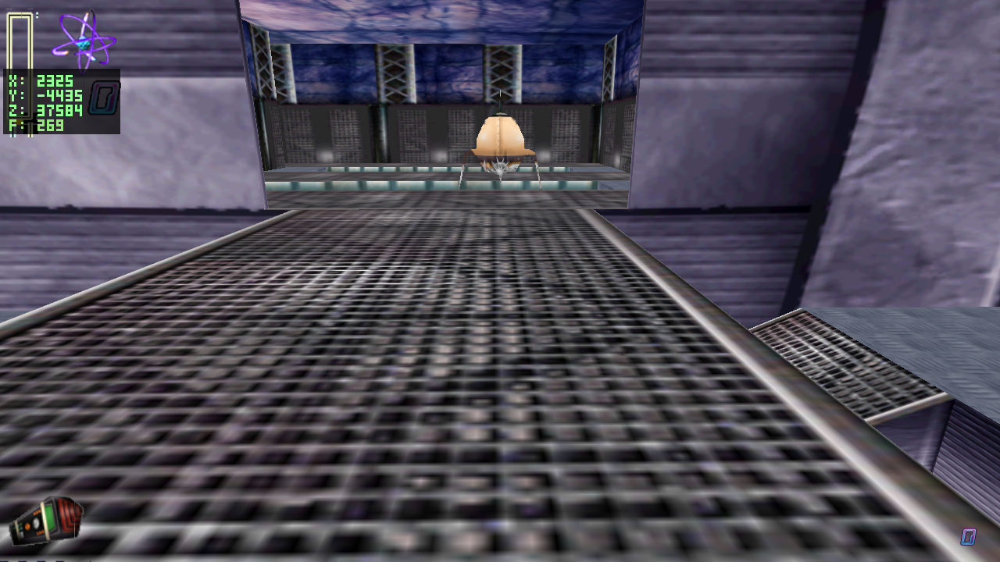

Ticket submitted by sandman - 2026-06-13 - level5a - fixes by Codex via jn-engine - live demo: exentt.com/jn-engine
This ticket looked like twenty separate audio and texture reports, but it reduced to two engine rules. First, GAM audio indices are original OMT Wave handles, not extracted RIFF-order filenames. The resolver now reads handle maps generated from the shipped *.omt files and routes C3DStartPoint, C3DMusicTrigger, C3DSoundEffect, and C3DPickupItem through those handles. Second, the Yokian classes already bind the correct original assets; their shipped ASEs simply omit UV blocks, so the loader now supplies object-space fallback UVs instead of sampling texel (0,0) everywhere.
| # | level | entity | cat. | report | resolution path |
|---|---|---|---|---|---|
| 1 | level5a | 3ROC [C3DROCKETSHIP] | OTH | audio trigger should be musicrocketmaze/0000_Surf_Music_Demo_End | C3DStartPoint music bank resolver; single-entry music fallback |
| 2 | level5a | 3PIC [C3DPICKUPITEM] | OTH | audio trigger should be musicarea51/0000_Hunting3_11k | C3DStartPoint / C3DMusicTrigger music resolver |
| 3 | level5a | 3SOL [C3DYOKIANSOLDIER] | TEX | missing yokian texture | class texture plus no-UV ASE fallback |
| 4 | level5a | 3GUA [C3DYOKIANGUARD] | TEX | missing yokian texture | class texture plus no-UV ASE fallback |
| 5 | level5a | 3GUA [C3DYOKIANGUARD] | TEX | missing yokian texture | class texture plus no-UV ASE fallback |
| 6 | level5a | 3JIM [JIM1] | OTH | trigger plays musicship/0002_Spooky_22k | 3MUS musicship handle 2 |
| 7 | level5a | 3JIM [JIM1] | OTH | trigger plays musicship/0001_Snip1_22k | 3MUS musicship handle 1 |
| 8 | level5a | 3JIM [JIM1] | OTH | pipe trigger for musicarea51/0000_Hunting3_11k resets the track | musicarea51 handle 0 resolver and music dedupe |
| 9 | level5a | 3PIC [C3DPICKUPITEM] | OTH | soundeffects/0279_holon | SoundEffects handle 99 |
| 10 | level5a | placement 03 | OTH | 0101_jimmyitem10 | nearby pickup SoundEffects handle 115 |
| 11 | level5a | 3PIC [barrelroll] | OTH | soundeffects/0288_jimmy_yahoo | SoundEffects handle 247 |
| 12 | level5a | 3PIC [C3DPICKUPITEM] | OTH | soundeffects/0076_jimmyitem2 | SoundEffects handle 114 |
| 13 | level5a | 3PIC [C3DPICKUPITEM] | OTH | soundeffects/0101_jimmyitem10 | SoundEffects handle 115 |
| 14 | level5a | 3PIC [C3DPICKUPITEM] | OTH | soundeffects/0063_jimmyitem5 | SoundEffects handle 111 |
| 15 | level5a | 3PIC [barrelroll2] | OTH | soundeffects/0302_jimmy_dizzy | SoundEffects handle 248 |
| 16 | level5a | 3PIC [C3DPICKUPITEM] | OTH | soundeffects/0101_jimmyitem10 | SoundEffects handle 115 |
| 17 | level5a | 3PIC [C3DPICKUPITEM] | OTH | soundeffects/0066_goddarddogbark6 | SoundEffects handle 119 |
| 18 | level5a | 3PIC [C3DPICKUPITEM] | OTH | soundeffects/0079_jimmyitem4 | SoundEffects handle 112 |
| 19 | level5a | 3PIC [C3DPICKUPITEM] | OTH | soundeffects/0079_jimmyitem10 | SoundEffects handle 115 resolves to 0101_jimmyitem10 |
| 20 | level5a | 3PIC [C3DPICKUPITEM] | OTH | soundeffects/0059_jimmyitem9 | SoundEffects handle 107 |
The extracted WAV filenames previously used RIFF byte order, so SoundIndex=115 incorrectly meant 0115_pop_arcade.wav. The original soundeffects.omt has a trailing Wave table: handle 115 points to the RIFF offset for jimmyitem10. That exact table also resolves the other reported pickup and barrel-roll sounds.
| authored handle | original bank | resolved WAV |
|---|---|---|
| 99 | soundeffects.omt | 0279_holon.wav |
| 107 | soundeffects.omt | 0059_jimmyitem9.wav |
| 111 | soundeffects.omt | 0063_jimmyitem5.wav |
| 112 | soundeffects.omt | 0079_jimmyitem4.wav |
| 114 | soundeffects.omt | 0076_jimmyitem2.wav |
| 115 | soundeffects.omt | 0101_jimmyitem10.wav |
| 119 | soundeffects.omt | 0066_goddarddogbark6.wav |
| 247 | soundeffects.omt | 0288_jimmy_yahoo.wav |
| 248 | soundeffects.omt | 0302_jimmy_dizzy.wav |
| 0 | musicarea51.omt | 0000_Hunting3_11k.wav |
| 1 | musicship.omt | 0001_Snip1_22k.wav |
| 2 | musicship.omt | 0002_Spooky_22k.wav |
| 0 | musicrocketmaze.omt | 0000_Surf_Music_Demo_End.wav |
tools/gen_audio_handle_maps.py generates assets/parsed/*/*_audio_handles.tsv from the shipped OMTs. Runtime audio uses audio_play_db() / audio_set_music_db() to resolve authored handles through those maps. 3MUS now selects the first authored non-negative MusicIndex0..4, which reaches Level5a's MusicIndex2=1/2 rows. C3DStartPoint music is applied when the player is placed at the named start point, and one-entry music banks fall back to their sole original track.

C3DYokianGuard registers guardwalk.ASE and loads yokguard.png. C3DYokianSoldier registers soldwalk.ASE and loads yoksold.png/yoksoldtalk.png. The current engine already selected those class assets, but the original ASE files contain no *MESH_TVERT or *MESH_TFACE blocks. Our loader filled missing UVs with zeroes, so an attached texture page collapsed to one texel.
ase_loader.c now supplies object-space fallback UVs derived from the source mesh bounds. This preserves the original class-selected mesh and texture files and removes the missing-texture failure. Exact Yokian atlas unwrap remains a rendering-decomp gap; this page records the fallback as an approximation, not a recovered pixel-exact skin.make -j2 python3 tools/audit_audio_handles.py SDL_AUDIODRIVER=dummy python3 tools/audit_faithfulness.py level5a SDL_AUDIODRIVER=dummy JN_SCREENSHOT=1 JN_SCREENSHOT_PATH=/tmp/level5a-audio-smoke.png JN_SCREENSHOT_WARMUP_TICKS=2 xvfb-run -a ./jnengine --level level5a SDL_AUDIODRIVER=dummy ./tools/qa_shot.sh /tmp/yokian-after.png 1124.9 -4170.9 37567.7 2453.3 -3703.5 37585.2 level5a 1200
tools/audit_audio_handles.py asserts the Level5a handles above against the generated OMT maps and verifies the Yokian ASE/PNG prerequisites.audit_faithfulness.py level5a completed with 0 findings.musicarea51[0] -> 0000_Hunting3_11k.wav on Level5a initial placement.